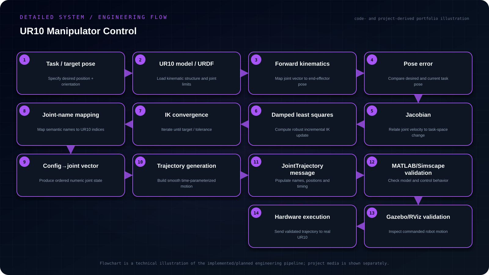

Objective
Develop a manipulator-control workflow for UR10 that converts task-space targets into joint-space trajectories using forward/inverse kinematics, damped least squares, ordered joint conversion and ROS JointTrajectory messaging, with simulation-first validation before hardware.
- Model the UR10 kinematic chain and compute forward/inverse kinematics.
- Use damped least squares to improve numerical behavior near singular configurations.
- Convert solved joint states into the exact UR10 joint-name/order convention.
- Generate ROS-compatible trajectories and validate in MATLAB/Simulink/Simscape and simulation before hardware execution.
My contribution
- Worked with forward and inverse kinematics and damped least-squares updates.
- Helper functions mapped joint names to indexes, converted joint configurations into ordered vectors and transformed joint vectors into ROS-compatible trajectory messages.
- The motion-control workflow was exercised from MATLAB/ROS and visualized in simulation.
System architecture
Target pose/configuration → FK/IK and DLS computation → ordered joint vector → time-parameterized trajectory → JointTrajectory message → simulated UR10 → validated hardware execution.

{kind=link}
Read the architecture as text
- Task / target pose — Specify desired position + orientation
- UR10 model / URDF — Load kinematic structure and joint limits
- Forward kinematics — Map joint vector to end-effector pose
- Pose error — Compare desired and current task pose
- Jacobian — Relate joint velocity to task-space change
- Damped least squares — Compute robust incremental IK update
- IK convergence — Iterate until target / tolerance
- Joint-name mapping — Map semantic names to UR10 indices
- Config→joint vector — Produce ordered numeric joint state
- Trajectory generation — Create ordered joint targets with timing
- JointTrajectory message — Populate names, positions and timing
- MATLAB/Simscape validation — Check model and control behavior
- Gazebo/RViz validation — Inspect commanded robot motion
- Hardware execution — Send validated trajectory to real UR10
Implementation
Worked with forward and inverse kinematics and damped least-squares updates. Helper functions mapped joint names to indexes, converted joint configurations into ordered vectors and transformed joint vectors into ROS-compatible trajectory messages. The motion-control workflow was exercised from MATLAB/ROS and visualized in simulation.
Engineering decisions
Simulation-before-hardware and explicit joint-order conversion were treated as safety and reproducibility requirements rather than optional convenience layers.
Challenges & debugging
Manipulator commands must remain consistent across joint naming, vector ordering, kinematic calculations and ROS trajectory messages. Small indexing or representation errors can produce unsafe or incorrect robot motion.
Validation
Compared commanded motion in simulation before sending trajectories to the real robot. Examined joint-position and joint-trajectory control approaches and checked joint ordering and timed trajectory commands. This does not establish collision avoidance or jerk-limited motion.
Outcome & boundaries
Produced ordered joint-vector and trajectory-message workflows with simulation checks before hardware execution.
Project sources
Implementation notes and available project sources. Public code is linked where available; descriptive diagrams are not independent validation.
No public repository is linked for this project.